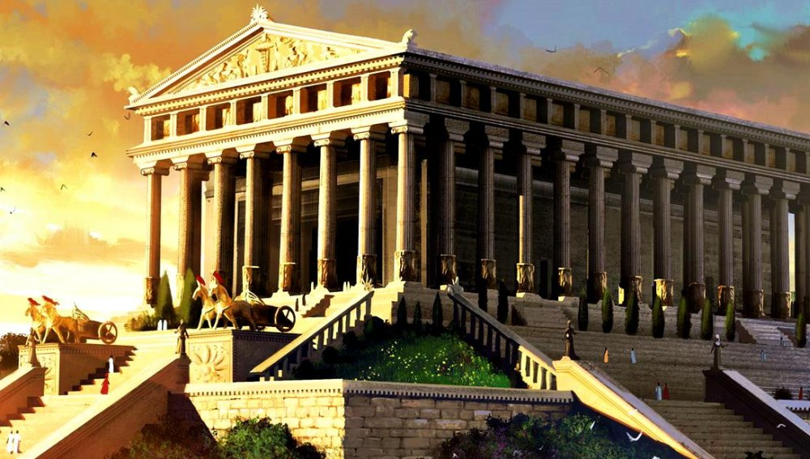

Піраміда Хеопса

найбільша з-поміж єгипетських пірамід, єдине з «Семи чудес світу», яке збереглося до наших днів. Входить до трійки найвідоміших пірамід на плато Гіза — Хеопса, Хефрена і Мікерина. Піраміда розташована на західному березі Нілу, у некрополі містаГіза і є комплексом стародавніх пам'ятників, які в часи єгипетськихфараонів були частиною стародавнього міста Мемфіс (сьогодні частинаВеликого Каїру). За монументальністю й обробкою вона перевершує всіінші піраміди на території Єгипту.
Висячі сади Семіраміди
Згідно зі стародавніми джерелами, розташоване у Вавилоні (сучасна Хілла). Назва пов'язана з легендарною царицею Семірамідою, для якої сади і були збудовані. Це єдине з чудес світу, точне розташування якого невідоме. Прообразом Висячих садів могли бути реальні верхові сади таіригаційні споруди в Вавилоні та Ніневії.
Статуя Зевса в Олімпії
Зевс зображався хризелефантовою скульптурою — виконаною зі слонової кістки та золотих панелей на дерев'яному каркасі. Жодної достеменно точної копії в мармурі чи бронзі не збереглося, хоча є приблизні зображення на монетах сусідньої Еліди, а також на римських монетах і різьблення на дорогоцінних каменях. Висота складала близько 12 м.
Храм Артеміди
Перший мармуровий давньогрецький храм, що знаходився в Іонії на егейському узбережжі Малої Азії поруч з античним містом Ефес (поблизу сучасного містечка Сельчук у Туреччині) та був присвячений давній місцевій формі богині Артеміди. Протягом своєї історії храм двічі повністю перебудовувався — в VII ст. до н. е. (після руйнівного потопу) і в IV ст. до н. е. (після підпалу Геростратом).